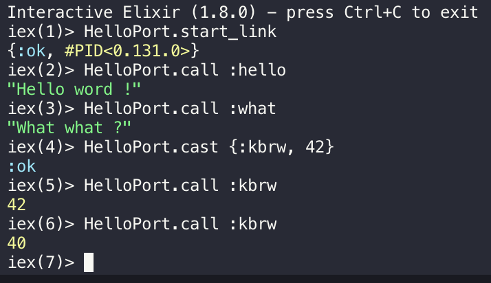

<style>
.markdown-body {
  box-sizing: border-box;
  min-width: 200px;
  max-width: 980px;
margin: 0 auto;
padding: 45px;
}

@media (max-width: 767px) {
  .markdown-body {
padding: 15px;
  }
}
</style>
<article class="markdown-body">
<!DOCTYPE html>
<html>
<head>
  <title>chap7/README.md</title>
  <link rel="stylesheet" href="../.github-markdown-css/github-markdown.css">
</head>
<body>
<h1>
<a id="user-content-chapter-7---reaxt" class="anchor" href="#chapter-7---reaxt" aria-hidden="true"><span aria-hidden="true" class="octicon octicon-link"></span></a>Chapter 7 - Reaxt</h1>
<p><a href="https://github.com/kbrw/reaxt"><strong><code>Reaxt</code></strong></a> is a home-made <code>elixir</code> module. The objective of this module is to render our pages on our server, allowing users with unactivated Javascript to access our website. <strong>Reaxt</strong> run a <strong>NodeJS</strong> server that will generate the <strong>HTML</strong> pages, using <strong>React</strong>. These generated pages are returned to the user on its browser.<br>
This divides our Javascript execution in two:</p>
<ul>
<li>a <strong>server side</strong>
</li>
<li>a <strong>client side</strong>
</li>
</ul>
<h2>
<a id="user-content-step-0---port-and-node_erlastic" class="anchor" href="#step-0---port-and-node_erlastic" aria-hidden="true"><span aria-hidden="true" class="octicon octicon-link"></span></a>Step 0 - <a href="https://hexdocs.pm/elixir/Port.html" rel="nofollow">Port</a> and <a href="https://github.com/kbrw/node_erlastic">Node_Erlastic</a>
</h2>
<p>This step aims to introduce you to the <code>Port</code> Elixir library, that allows <strong>Reaxt</strong> to communicate to a <strong>NodeJS</strong> server.<br>
To help us, we're gonna use our home-made library <strong>node_erlastic</strong>.</p>
<p><strong>Go read the documentation of both this libraries.</strong></p>
<h3>
<a id="user-content-hello-port-" class="anchor" href="#hello-port-" aria-hidden="true"><span aria-hidden="true" class="octicon octicon-link"></span></a>Hello <a href="https://hexdocs.pm/elixir/Port.html" rel="nofollow">Port</a> !</h3>
<p>Create a new <code>Mix</code> project:</p>
<div class="highlight highlight-source-shell"><pre>  $<span class="pl-k">&gt;</span> mix new hello_port --module HelloPort</pre></div>
<p>Our <code>HelloPort</code> module is gonna be a really simple <code>GenServer</code>.<br>
Our init function will contain something like this:</p>
<div class="highlight highlight-source-elixir"><pre>port <span class="pl-k">=</span> <span class="pl-en">Port</span>.open({<span class="pl-c1">:spawn</span>, <span class="pl-s"><span class="pl-pds">'</span><span class="pl-pse">#{</span><span class="pl-s1">cmd</span><span class="pl-pse">}</span><span class="pl-pds">'</span></span>}, [<span class="pl-c1">:binary</span>, <span class="pl-c1">:exit_status</span>, <span class="pl-c1">packet:</span> <span class="pl-c1">4</span>] <span class="pl-k">++</span> opts)</pre></div>
<ul>
<li>
<code>Port</code> allow us to <code>:spawn</code> a new OS process, and talk to it
<ul>
<li>Here, it will spawn the OS process using the <code>cmd</code> parameter
<ul>
<li><em>Example: "node test.js" will spawn a node server using the script test.js</em></li>
</ul>
</li>
<li>I will let you check the meaning of the options</li>
</ul>
</li>
<li>We bind it to <code>port</code>, that will be our internal GenServer state</li>
</ul>
<p>To communicate with our <code>NodeJS</code> server, we're gonna send it <strong>binary data</strong>. To achieve that, we will use the <code>:erlang.term_to_binary/1</code> function.</p>
<p>Here is how we're gonna send data to our <code>node_erlastic</code> server:</p>
<div class="highlight highlight-source-elixir"><pre>  send(port, {self, {<span class="pl-c1">:command</span>, <span class="pl-c1">:erlang</span>.term_to_binary(term)}})</pre></div>
<ul>
<li>
<code>port</code> is our GenServer internal state</li>
<li>
<code>:command</code> is used to tell our <code>node_erlastic</code> that we're sending it a command</li>
<li>the <code>term</code> is our real command
<ul>
<li>
<em>Example: <code>GenServer.cast HelloPort, {:my_command, 42</code>}</em>
<ul>
<li>Here <code>{:my_command, 42}</code> is our <code>term</code>
</li>
</ul>
</li>
</ul>
</li>
</ul>
<p>We will also need to receive data, especially for our <code>handle_call/3</code> function. To achieve that, we will use the <code>receive</code> function.<br>
<strong>I will not show you how to do it, take a look at <a href="https://github.com/kbrw/node_erlastic">node_erlastic</a> and the <a href="https://hexdocs.pm/elixir/Kernel.html" rel="nofollow">Kernel documentation</a>.</strong></p>
<p>We should be able to create our <code>GenServer</code> using this syntax:</p>
<div class="highlight highlight-source-elixir"><pre><span class="pl-en">GenServer</span>.start_link(<span class="pl-en">HelloPort</span>, {<span class="pl-s"><span class="pl-pds">"</span>node hello.js<span class="pl-pds">"</span></span>, <span class="pl-c1">0</span>, <span class="pl-c1">cd:</span> <span class="pl-s"><span class="pl-pds">"</span>/path/to/proj<span class="pl-pds">"</span></span>}, <span class="pl-c1">name:</span> <span class="pl-en">Hello</span>)</pre></div>
<hr>
<p><strong>Exercice:</strong></p>
<ul>
<li>Using the <a href="https://github.com/kbrw/node_erlastic">node_erlastic</a> documentation, create a file named <code>hello.js</code> that will allow us to perform some actions from our <code>HelloPort</code> GenServer
<ul>
<li>When sending <strong>call</strong> with the command <code>:hello</code> the <strong>node server</strong> should answer <code>Hello world!</code>. You <code>call</code> will return this message.</li>
</ul>
</li>
<li>Invent other use cases for the <code>cast</code> and <code>call</code>, have some fun !</li>
</ul>
<p><a href="./img/hello_port.png" target="_blank" rel="noopener noreferrer"></a></p>
<hr>
<h2>
<a id="user-content-step-1---install-reaxt-dependencies" class="anchor" href="#step-1---install-reaxt-dependencies" aria-hidden="true"><span aria-hidden="true" class="octicon octicon-link"></span></a>Step 1 - Install Reaxt dependencies</h2>
<p><strong>Reaxt</strong> works exactly like what you did in the previous step.</p>
<p><strong>There is no magic !</strong></p>
<h3>
<a id="user-content-mix-dependencies" class="anchor" href="#mix-dependencies" aria-hidden="true"><span aria-hidden="true" class="octicon octicon-link"></span></a>Mix dependencies</h3>
<p>First, let's install <strong><code>Reaxt</code></strong> dependencies in our <strong>mix</strong> project.</p>
<div class="highlight highlight-source-elixir"><pre><span class="pl-k">def</span> <span class="pl-en">project</span> <span class="pl-k">do</span> 
  [
    <span class="pl-k">..</span>.,
    <span class="pl-c1">compilers:</span> [<span class="pl-c1">:reaxt_webpack</span>] <span class="pl-k">++</span> <span class="pl-en">Mix</span>.compilers
  ]
<span class="pl-k">end</span> 

<span class="pl-k">defp</span> <span class="pl-en">deps</span> <span class="pl-k">do</span>
  [
    {<span class="pl-c1">:reaxt</span>, <span class="pl-s"><span class="pl-pds">"</span>~&gt; 2.0<span class="pl-pds">"</span></span>, <span class="pl-c1">github:</span> <span class="pl-s"><span class="pl-pds">"</span>kbrw/reaxt<span class="pl-pds">"</span></span>}, 
    <span class="pl-k">..</span>.
  ]
<span class="pl-k">end</span></pre></div>
<p>And launch its application</p>
<div class="highlight highlight-source-elixir"><pre><span class="pl-k">def</span> <span class="pl-en">application</span> <span class="pl-k">do</span>                                                            
  [
    <span class="pl-c1">applications:</span> [<span class="pl-k">..</span>., <span class="pl-c1">:reaxt</span>],
    <span class="pl-k">..</span>.
  ]
<span class="pl-k">end</span></pre></div>
<h3>
<a id="user-content-web-server" class="anchor" href="#web-server" aria-hidden="true"><span aria-hidden="true" class="octicon octicon-link"></span></a>Web server</h3>
<p>Now we have to install our <strong>server side</strong> js in our <code>web/</code> directory.<br>
First, we will install the <code>npm</code> dependencies required by <code>Reaxt</code>. For that, we will need to make a special <code>tar</code> package for npm.</p>
<div class="highlight highlight-source-shell"><pre><span class="pl-c1">cd</span> ./deps/reaxt/priv/
tar -czf reaxt.tgz commonjs_reaxt/
mv reaxt.tgz ../../../web
<span class="pl-c1">cd</span> ../../../web
npm install reaxt.tgz --save-dev </pre></div>
<p>All this is already done by the mix task in <code>reaxt/lib/tasks.ex</code> (<strong>I recommend you to read this file</strong>).</p>
<div class="highlight highlight-source-elixir"><pre>mix npm.install </pre></div>
<p>The server side now needs <code>webpack</code> as a dependency. So, we need to move it from <code>devDependencies</code> to <code>dependencies</code> (if it's not already the case).</p>
<h2>
<a id="user-content-step-1---configure-the-build" class="anchor" href="#step-1---configure-the-build" aria-hidden="true"><span aria-hidden="true" class="octicon octicon-link"></span></a>Step 1 - Configure the build</h2>
<p>Now that we have all the dependencies, we will need to configure <code>reaxt</code>, using the file <code>config.exs</code>.<br>
<strong>I recommand you to have a look at <code>reaxt</code> source in <code>deps/reaxt</code>.</strong></p>
<p>Let's update our <code>config/config.exs</code> file:</p>
<div class="highlight highlight-source-elixir"><pre>config <span class="pl-c1">:reaxt</span>, [
  <span class="pl-c1">otp_app:</span> <span class="pl-c1">:tutokbrwstack</span>,
  <span class="pl-c1">hot:</span> <span class="pl-c1">false</span>,
  <span class="pl-c1">pool_size:</span> <span class="pl-c1">3</span>,
  <span class="pl-c1">global_config:</span> %{}
]</pre></div>
<p>In this configuration:</p>
<ul>
<li>
<code>hot</code> means hot reload (a script that will reload your page if you do some modification on it). If you want to activate it, you set this option to true and generate <code>webpack/client.js</code>
</li>
<li>
<code>pool_size</code> represent the number of <strong><code>GenServer</code></strong> started by <a href="https://elixirschool.com/en/lessons/libraries/poolboy/" rel="nofollow"><code>:poolboy</code></a>
</li>
<li>
<code>global_config</code> is the <strong>Reaxt</strong> general configuration</li>
</ul>
<p>Now, we need to provide a rule to compile the server side of our application.<br>
Thus, we will need to update our <code>webpack.config.js</code> file.<br>
The configuration now needs to be splited between the <strong>client</strong> and the <strong>server</strong> side configurations.</p>
<p>The <code>module.exports</code> configuration became the <code>client_config</code> variable:</p>
<div class="highlight highlight-source-js"><pre><span class="pl-k">var</span> client_config <span class="pl-k">=</span> {
  devtool<span class="pl-k">:</span> <span class="pl-s"><span class="pl-pds">'</span>source-map<span class="pl-pds">'</span></span>,
  <span class="pl-c"><span class="pl-c">//</span>&gt;&gt;&gt; entry: './app.js',</span>
  entry<span class="pl-k">:</span> <span class="pl-s"><span class="pl-pds">"</span>reaxt/client_entry_addition<span class="pl-pds">"</span></span>,
  <span class="pl-c"><span class="pl-c">//</span>&gt;&gt;&gt; output: { filename: 'bundle.js' , path: path.join(__dirname, '../priv/static' ) }, </span>
  output<span class="pl-k">:</span> { 
    filename<span class="pl-k">:</span> <span class="pl-s"><span class="pl-pds">'</span>client.[hash].js<span class="pl-pds">'</span></span>, 
    path<span class="pl-k">:</span> <span class="pl-smi">path</span>.<span class="pl-c1">join</span>(<span class="pl-c1">__dirname</span>, <span class="pl-s"><span class="pl-pds">'</span>../priv/static<span class="pl-pds">'</span></span> ),
    publicPath<span class="pl-k">:</span> <span class="pl-s"><span class="pl-pds">'</span>/public/<span class="pl-pds">'</span></span>
  }, 
  plugins<span class="pl-k">:</span> [
    <span class="pl-k">new</span> <span class="pl-en">ExtractTextPlugin</span>({filename<span class="pl-k">:</span> <span class="pl-s"><span class="pl-pds">"</span>styles.css<span class="pl-pds">"</span></span>}),<span class="pl-k">new</span> <span class="pl-en">webpack.IgnorePlugin</span>(<span class="pl-sr"><span class="pl-pds">/</span>vertx<span class="pl-pds">/</span></span>)
  ],
  module<span class="pl-k">:</span> { <span class="pl-k">...</span> }
}</pre></div>
<p>If you have the <code>babel</code> version set 6 in your dependencies you will need to add <code>exclude: /node_modules/</code> as option in your <code>module</code> value. This will prevent babel to load all the javascript file
in you node module folder and to transpile them in your <code>server.js</code>.</p>
<p>And we create the server configuration which will be used by our node server:</p>
<div class="highlight highlight-source-js"><pre><span class="pl-k">var</span> server_config <span class="pl-k">=</span> <span class="pl-c1">Object</span>.<span class="pl-en">assign</span>(<span class="pl-c1">Object</span>.<span class="pl-en">assign</span>({},client_config),{
 target<span class="pl-k">:</span> <span class="pl-s"><span class="pl-pds">"</span>node<span class="pl-pds">"</span></span>,
 entry<span class="pl-k">:</span> <span class="pl-s"><span class="pl-pds">"</span>reaxt/react_server<span class="pl-pds">"</span></span>,
 output<span class="pl-k">:</span> {
   path<span class="pl-k">:</span> <span class="pl-smi">path</span>.<span class="pl-c1">join</span>(<span class="pl-c1">__dirname</span>, <span class="pl-s"><span class="pl-pds">'</span>../priv/react_servers<span class="pl-pds">'</span></span>), <span class="pl-c"><span class="pl-c">//</span>typical output on the default directory served by Plug.Static</span>
   filename<span class="pl-k">:</span> <span class="pl-s"><span class="pl-pds">'</span>server.js<span class="pl-pds">'</span></span> <span class="pl-c"><span class="pl-c">//</span>dynamic name for long term caching, or code splitting, use WebPack.file_of(:main) to get it</span>
 },
})</pre></div>
<p>Finally we need to export the module as done in the previous <code>webpack.config.js</code> file :</p>
<div class="highlight highlight-source-js"><pre><span class="pl-c1">module</span>.<span class="pl-smi">exports</span> <span class="pl-k">=</span> [client_config,server_config]</pre></div>
<p>And move our <code>app.js</code> in a sub directory named <code>components</code>, as well as update the paths to your css in your <code>app.js</code>.</p>
<p>Now compile your server with</p>
<div class="highlight highlight-source-shell"><pre>mix webpack.compile</pre></div>
<p><em><strong>If you don't understand some part of this configuration, go read the documentation of Reaxt on <a href="https://github.com/kbrw/reaxt">Github</a>.</strong></em></p>
<h2>
<a id="user-content-step-2---script-modification" class="anchor" href="#step-2---script-modification" aria-hidden="true"><span aria-hidden="true" class="octicon octicon-link"></span></a>Step 2 - Script modification</h2>
<h3>
<a id="user-content-our-elixir-app" class="anchor" href="#our-elixir-app" aria-hidden="true"><span aria-hidden="true" class="octicon octicon-link"></span></a>Our Elixir app</h3>
<p>Let's now update our main application function to set the correct
environment for <strong><code>Reaxt</code></strong>.</p>
<div class="highlight highlight-source-elixir"><pre><span class="pl-k">defmodule</span> <span class="pl-en">TutoKBRWStack</span> <span class="pl-k">do</span> 
  <span class="pl-k">def</span> <span class="pl-en">start</span>(_, _) <span class="pl-k">do</span> 
    <span class="pl-k">..</span>.
    <span class="pl-en">Application</span>.put_env(
      <span class="pl-c1">:reaxt</span>,<span class="pl-c1">:global_config</span>,
      <span class="pl-en">Map</span>.merge(
        <span class="pl-en">Application</span>.get_env(<span class="pl-c1">:reaxt</span>,<span class="pl-c1">:global_config</span>), %{<span class="pl-c1">localhost:</span> <span class="pl-s"><span class="pl-pds">"</span>http://localhost:4001<span class="pl-pds">"</span></span>}
      )
    )
    <span class="pl-en">Reaxt</span>.reload
    <span class="pl-k">..</span>.
  <span class="pl-k">end</span>
<span class="pl-k">end</span> </pre></div>
<p>This scripts provide to <strong><code>Reaxt</code></strong> its working environment and also put a callback on the URL in case the website get some modifications: this will automatically reload your browser once some modification have been done on your front.</p>
<h3>
<a id="user-content-our-js-app" class="anchor" href="#our-js-app" aria-hidden="true"><span aria-hidden="true" class="octicon octicon-link"></span></a>Our JS app</h3>
<p>We need to submit 2 different execution flow depending on the side the code is being executed (server / client).<br>
If the execution is occuring on the server side, we will download the <code>remoteProps</code>, but we won't render the server.<br>
Whereas on the client side, we need to render the objects.</p>
<p>To isolate the two flows, we have to export two functions that <strong>Reaxt</strong> will use. Let's add them to our <code>app.js</code>:</p>
<div class="highlight highlight-source-js"><pre><span class="pl-c1">module</span>.<span class="pl-smi">exports</span> <span class="pl-k">=</span> {
  <span class="pl-en">reaxt_server_render</span>(<span class="pl-smi">params</span>, <span class="pl-smi">render</span>){
    <span class="pl-en">inferPropsChange</span>(<span class="pl-smi">params</span>.<span class="pl-smi">path</span>, <span class="pl-smi">params</span>.<span class="pl-smi">query</span>, <span class="pl-smi">params</span>.<span class="pl-smi">cookies</span>)
      .<span class="pl-c1">then</span>(()<span class="pl-k">=&gt;</span>{
        <span class="pl-en">render</span>(<span class="pl-k">&lt;</span>Child {<span class="pl-k">...</span>browserState}<span class="pl-k">/</span><span class="pl-k">&gt;</span>)
      },(<span class="pl-smi">err</span>)<span class="pl-k">=&gt;</span>{
        <span class="pl-en">render</span>(<span class="pl-k">&lt;</span>ErrorPage message<span class="pl-k">=</span>{<span class="pl-s"><span class="pl-pds">"</span>Not Found :<span class="pl-pds">"</span></span> <span class="pl-k">+</span> <span class="pl-smi">err</span>.<span class="pl-smi">url</span> } code<span class="pl-k">=</span>{<span class="pl-smi">err</span>.<span class="pl-smi">http_code</span>}<span class="pl-k">/</span><span class="pl-k">&gt;</span>, <span class="pl-smi">err</span>.<span class="pl-smi">http_code</span>)
      })
  },
  <span class="pl-en">reaxt_client_render</span>(<span class="pl-smi">initialProps</span>, <span class="pl-smi">render</span>){
    browserState <span class="pl-k">=</span> initialProps
    <span class="pl-smi">Link</span>.<span class="pl-smi">renderFunc</span> <span class="pl-k">=</span> render
    <span class="pl-c1">window</span>.<span class="pl-c1">addEventListener</span>(<span class="pl-s"><span class="pl-pds">"</span>popstate<span class="pl-pds">"</span></span>, ()<span class="pl-k">=&gt;</span>{ <span class="pl-smi">Link</span>.<span class="pl-en">onPathChange</span>() })
    <span class="pl-smi">Link</span>.<span class="pl-en">onPathChange</span>()
  }
}</pre></div>
<ul>
<li>
<code>reaxt_server_render</code> will be called in our <code>server.js</code>
</li>
<li>
<code>reaxt_client_render</code> will be called in our <code>client.js</code>
</li>
<li>The <code>Link</code> object is a new <strong>React Class</strong> that we are gonna create
<ul>
<li>Its job is to handle all things relative to links
<ul>
<li>change of paths (our <code>onPathChange</code>), navigation (our <code>GoTo</code>), etc.</li>
</ul>
</li>
</ul>
</li>
<li>the <code>inferPropsChange</code> contains all the previous code that was in <code>onPatchChange</code> that concerns the <strong>remote props</strong>.</li>
</ul>
<h4>
<a id="user-content-inferpropschange" class="anchor" href="#inferpropschange" aria-hidden="true"><span aria-hidden="true" class="octicon octicon-link"></span></a>inferPropsChange</h4>
<p>Let's first attack by our new <code>inferPropsChange</code> function.</p>
<div class="highlight highlight-source-js"><pre><span class="pl-k">var</span> browserState <span class="pl-k">=</span> {}

<span class="pl-k">function</span> <span class="pl-en">inferPropsChange</span>(<span class="pl-smi">path</span>,<span class="pl-smi">query</span>,<span class="pl-smi">cookies</span>){ <span class="pl-c"><span class="pl-c">//</span> the second part of the onPathChange function have been moved here</span>
  browserState <span class="pl-k">=</span> {
    <span class="pl-k">...</span>browserState,
    path<span class="pl-k">:</span> path, qs<span class="pl-k">:</span> query,
    Link<span class="pl-k">:</span> Link,
    Child<span class="pl-k">:</span> Child
  }

  <span class="pl-k">var</span> route, routeProps
  <span class="pl-k">for</span>(<span class="pl-k">var</span> key <span class="pl-k">in</span> routes) {
    routeProps <span class="pl-k">=</span> routes[key].<span class="pl-c1">match</span>(path, query)
    <span class="pl-k">if</span>(routeProps){
      route <span class="pl-k">=</span> key
      <span class="pl-k">break</span>
    }
  }

  <span class="pl-k">if</span>(<span class="pl-k">!</span>route){
    <span class="pl-k">return</span> <span class="pl-k">new</span> <span class="pl-en">Promise</span>( (<span class="pl-smi">res</span>,<span class="pl-smi">reject</span>) <span class="pl-k">=&gt;</span> <span class="pl-en">reject</span>({http_code<span class="pl-k">:</span> <span class="pl-c1">404</span>}))
  }
  browserState <span class="pl-k">=</span> {
    <span class="pl-k">...</span>browserState,
    <span class="pl-k">...</span>routeProps,
    route<span class="pl-k">:</span> route
  }

  <span class="pl-k">return</span> <span class="pl-en">addRemoteProps</span>(browserState).<span class="pl-c1">then</span>(
    (<span class="pl-smi">props</span>)<span class="pl-k">=&gt;</span>{
      browserState <span class="pl-k">=</span> props
    })
}</pre></div>
<p>This is pretty straight forward, no need to explain the code. If you don't understand it, I suggest you go back to <a href="./chap5.html">chapter 5</a>.</p>
<h4>
<a id="user-content-our-new-link-class" class="anchor" href="#our-new-link-class" aria-hidden="true"><span aria-hidden="true" class="octicon octicon-link"></span></a>Our new Link class</h4>
<p>The <code>Link</code> class handles everything related to our pages navigation and window URL.<br>
Let's move our <code>onPathChange</code> and <code>GoTo</code> functions into it:</p>
<div class="highlight highlight-source-js"><pre><span class="pl-k">var</span> Link <span class="pl-k">=</span> <span class="pl-en">createReactClass</span>({
  statics<span class="pl-k">:</span> {
    renderFunc<span class="pl-k">:</span> <span class="pl-c1">null</span>, <span class="pl-c"><span class="pl-c">//</span>render function to use (differently set depending if we are server sided or client sided)</span>
    <span class="pl-en">GoTo</span>(<span class="pl-smi">route</span>, <span class="pl-smi">params</span>, <span class="pl-smi">query</span>){<span class="pl-c"><span class="pl-c">//</span> function used to change the path of our browser</span>
      <span class="pl-k">var</span> path <span class="pl-k">=</span> routes[route].<span class="pl-en">path</span>(params)
      <span class="pl-k">var</span> qs <span class="pl-k">=</span> <span class="pl-smi">Qs</span>.<span class="pl-c1">stringify</span>(query)
      <span class="pl-k">var</span> url <span class="pl-k">=</span> path <span class="pl-k">+</span> (qs <span class="pl-k">==</span> <span class="pl-s"><span class="pl-pds">'</span><span class="pl-pds">'</span></span> <span class="pl-k">?</span> <span class="pl-s"><span class="pl-pds">'</span><span class="pl-pds">'</span></span> <span class="pl-k">:</span> <span class="pl-s"><span class="pl-pds">'</span>?<span class="pl-pds">'</span></span> <span class="pl-k">+</span> qs)
      <span class="pl-smi">history</span>.<span class="pl-en">pushState</span>({},<span class="pl-s"><span class="pl-pds">"</span><span class="pl-pds">"</span></span>,url)
      <span class="pl-smi">Link</span>.<span class="pl-en">onPathChange</span>()
    },
    <span class="pl-en">onPathChange</span>(){ <span class="pl-c"><span class="pl-c">//</span>Updated onPathChange</span>
      <span class="pl-k">var</span> path <span class="pl-k">=</span> <span class="pl-smi">location</span>.<span class="pl-c1">pathname</span>
      <span class="pl-k">var</span> qs <span class="pl-k">=</span> <span class="pl-smi">Qs</span>.<span class="pl-c1">parse</span>(<span class="pl-smi">location</span>.<span class="pl-smi">search</span>.<span class="pl-c1">slice</span>(<span class="pl-c1">1</span>))
      <span class="pl-k">var</span> cookies <span class="pl-k">=</span> <span class="pl-smi">Cookie</span>.<span class="pl-c1">parse</span>(<span class="pl-c1">document</span>.<span class="pl-c1">cookie</span>)
      <span class="pl-en">inferPropsChange</span>(path, qs, cookies).<span class="pl-c1">then</span>( <span class="pl-c"><span class="pl-c">//</span>inferPropsChange download the new props if the url query changed as done previously</span>
        ()<span class="pl-k">=&gt;</span>{
          <span class="pl-smi">Link</span>.<span class="pl-en">renderFunc</span>(<span class="pl-k">&lt;</span>Child {<span class="pl-k">...</span>browserState}<span class="pl-k">/</span><span class="pl-k">&gt;</span>) <span class="pl-c"><span class="pl-c">//</span>if we are on server side we render </span>
        },({http_code})<span class="pl-k">=&gt;</span>{
          <span class="pl-smi">Link</span>.<span class="pl-en">renderFunc</span>(<span class="pl-k">&lt;</span>ErrorPage message<span class="pl-k">=</span>{<span class="pl-s"><span class="pl-pds">"</span>Not Found<span class="pl-pds">"</span></span>} code<span class="pl-k">=</span>{http_code}<span class="pl-k">/</span><span class="pl-k">&gt;</span>, http_code) <span class="pl-c"><span class="pl-c">//</span>idem</span>
        }
      )
    },
    <span class="pl-en">LinkTo</span><span class="pl-k">:</span> (<span class="pl-smi">route</span>,<span class="pl-smi">params</span>,<span class="pl-smi">query</span>)<span class="pl-k">=&gt;</span> {
      <span class="pl-k">var</span> qs <span class="pl-k">=</span> <span class="pl-smi">Qs</span>.<span class="pl-c1">stringify</span>(query)
      <span class="pl-k">return</span> routes[route].<span class="pl-en">path</span>(params) <span class="pl-k">+</span>((qs<span class="pl-k">==</span><span class="pl-s"><span class="pl-pds">'</span><span class="pl-pds">'</span></span>) <span class="pl-k">?</span> <span class="pl-s"><span class="pl-pds">'</span><span class="pl-pds">'</span></span> <span class="pl-k">:</span> (<span class="pl-s"><span class="pl-pds">'</span>?<span class="pl-pds">'</span></span><span class="pl-k">+</span>qs))
    }
  }
})</pre></div>
<ul>
<li>Both <code>onPatchChange</code> and <code>GoTo</code> should be familiar to you</li>
<li>
<code>LinkTo</code> is used to return the expected URL, like in <code>GoTo</code> except it returns it instead of pushing it to the browser</li>
</ul>
<p>Some browsers do not support <strong>Javascript</strong>, or block it. To fix that, we will render all our links using the <code>render</code> function of our <strong>Link</strong> Class:</p>
<div class="highlight highlight-source-js"><pre><span class="pl-en">onClick</span>(<span class="pl-smi">ev</span>) {
    <span class="pl-smi">ev</span>.<span class="pl-c1">preventDefault</span>();
    <span class="pl-smi">Link</span>.<span class="pl-en">GoTo</span>(<span class="pl-c1">this</span>.<span class="pl-smi">props</span>.<span class="pl-smi">to</span>,<span class="pl-c1">this</span>.<span class="pl-smi">props</span>.<span class="pl-smi">params</span>,<span class="pl-c1">this</span>.<span class="pl-smi">props</span>.<span class="pl-smi">query</span>);
  },
  <span class="pl-en">render</span> (){<span class="pl-c"><span class="pl-c">//</span>render a &lt;Link&gt; this way transform link into href path which allows on browser without javascript to work perfectly on the website</span>
    <span class="pl-k">return</span> (
      <span class="pl-k">&lt;</span>a href<span class="pl-k">=</span>{<span class="pl-smi">Link</span>.<span class="pl-en">LinkTo</span>(<span class="pl-c1">this</span>.<span class="pl-smi">props</span>.<span class="pl-smi">to</span>,<span class="pl-c1">this</span>.<span class="pl-smi">props</span>.<span class="pl-smi">params</span>,<span class="pl-c1">this</span>.<span class="pl-smi">props</span>.<span class="pl-smi">query</span>)} onClick<span class="pl-k">=</span>{<span class="pl-c1">this</span>.<span class="pl-smi">onClick</span>}<span class="pl-k">&gt;</span>
        {<span class="pl-c1">this</span>.<span class="pl-smi">props</span>.<span class="pl-smi">children</span>}
      <span class="pl-k">&lt;</span><span class="pl-k">/</span>a<span class="pl-k">&gt;</span>
    )
  }</pre></div>
<h4>
<a id="user-content-handle-the-localhost-property" class="anchor" href="#handle-the-localhost-property" aria-hidden="true"><span aria-hidden="true" class="octicon octicon-link"></span></a>Handle the localhost property</h4>
<p>Our server endpoint is different if we are on the client or on the server.</p>
<p>Let's change the HTTP function to work on the server side:</p>
<div class="highlight highlight-source-js"><pre><span class="pl-k">var</span> localhost <span class="pl-k">=</span> <span class="pl-c1">require</span>(<span class="pl-s"><span class="pl-pds">'</span>reaxt/config<span class="pl-pds">'</span></span>).<span class="pl-smi">localhost</span>
<span class="pl-k">var</span> <span class="pl-c1">XMLHttpRequest</span> <span class="pl-k">=</span> <span class="pl-c1">require</span>(<span class="pl-s"><span class="pl-pds">"</span>xhr2<span class="pl-pds">"</span></span>) <span class="pl-c"><span class="pl-c">//</span> External XmlHTTPReq on browser, xhr2 on server</span>
<span class="pl-k">var</span> <span class="pl-c1">HTTP</span> <span class="pl-k">=</span> <span class="pl-k">new</span> (<span class="pl-k">function</span>(){
    [<span class="pl-k">...</span>]
  <span class="pl-c1">this</span>.<span class="pl-en">req</span> <span class="pl-k">=</span> (<span class="pl-smi">method</span>,<span class="pl-smi">url</span>,<span class="pl-smi">data</span>)<span class="pl-k">=&gt;</span>{
    <span class="pl-k">return</span> <span class="pl-k">new</span> <span class="pl-en">Promise</span>((<span class="pl-smi">resolve</span>, <span class="pl-smi">reject</span>) <span class="pl-k">=&gt;</span> {
      <span class="pl-k">var</span> req <span class="pl-k">=</span> <span class="pl-k">new</span> <span class="pl-en">XMLHttpRequest</span>()
      url <span class="pl-k">=</span> (<span class="pl-k">typeof</span> <span class="pl-c1">window</span> <span class="pl-k">!==</span> <span class="pl-s"><span class="pl-pds">'</span>undefined<span class="pl-pds">'</span></span>) <span class="pl-k">?</span> url <span class="pl-k">:</span> localhost<span class="pl-k">+</span>url

    [<span class="pl-k">...</span>]</pre></div>
<p>Here, the API address is furnished to the script when it is running on the server: the relative path doesn't work on the server side.</p>
<h2>
<a id="user-content-step-3---change-our-indexhtml-to-layouthtmleex" class="anchor" href="#step-3---change-our-indexhtml-to-layouthtmleex" aria-hidden="true"><span aria-hidden="true" class="octicon octicon-link"></span></a>Step 3 - Change our index.html to layout.html.eex</h2>
<p>In our new <strong>Webpack</strong> configuration our generated <code>client.js</code> contains a hash in his name.<br>
To help us face that, we will generate our <code>index.html</code> file via <strong>Reaxt</strong>.</p>
<p><strong>We will use the <a href="https://hexdocs.pm/eex/EEx.html#function_from_file/5" rel="nofollow"><strong><code>EEx</code></strong></a> module.</strong></p>
<ul>
<li>Copy the <code>layout.html.eex</code> into your web directory.</li>
<li>In your <strong><code>Router</code></strong> module, change your <code>Plug.Static</code>
</li>
</ul>
<div class="highlight highlight-source-elixir"><pre>plug <span class="pl-en">Plug</span>.<span class="pl-en">Static</span>, <span class="pl-c1">at:</span> <span class="pl-s"><span class="pl-pds">"</span>/public<span class="pl-pds">"</span></span>, <span class="pl-c1">from:</span> <span class="pl-c1">:tutokbrwstack</span></pre></div>
<p>and add</p>
<div class="highlight highlight-source-elixir"><pre><span class="pl-k">require</span> <span class="pl-en">EEx</span>
<span class="pl-en">EEx</span>.function_from_file <span class="pl-c1">:defp</span>, <span class="pl-c1">:layout</span>, <span class="pl-s"><span class="pl-pds">"</span>web/layout.html.eex<span class="pl-pds">"</span></span>, [<span class="pl-c1">:render</span>]</pre></div>
<p>Finally, we need to return the generated code from <strong><code>Reaxt</code></strong> to the client.</p>
<div class="highlight highlight-source-elixir"><pre>  get _ <span class="pl-k">do</span>
    conn <span class="pl-k">=</span> fetch_query_params(conn)
    render <span class="pl-k">=</span> <span class="pl-en">Reaxt</span>.render!(<span class="pl-c1">:app</span>, %{<span class="pl-c1">path:</span> conn.request_path, <span class="pl-c1">cookies:</span> conn.cookies, <span class="pl-c1">query:</span> conn.params},<span class="pl-c1">30_000</span>)
    send_resp(put_resp_header(conn,<span class="pl-s"><span class="pl-pds">"</span>content-type<span class="pl-pds">"</span></span>,<span class="pl-s"><span class="pl-pds">"</span>text/html;charset=utf-8<span class="pl-pds">"</span></span>), render.param <span class="pl-k">||</span> <span class="pl-c1">200</span>,layout(render))
  <span class="pl-k">end</span></pre></div>
<hr>
<h2>
<a id="user-content-question-time-" class="anchor" href="#question-time-" aria-hidden="true"><span aria-hidden="true" class="octicon octicon-link"></span></a>Question time !</h2>
<ul>
<li>What is <strong>Reaxt</strong> ?</li>
<li>Why do we use server-side rendering ?</li>
<li>What does the <strong>EEx</strong> name stands for, and what are its use case ?</li>
</ul>
<hr>
<p><a href="chap6.html">Prev Chapter</a> <strong>Chapter 7</strong> <a href="chap8.html">Next Chapter</a></p>

</body>
</html>
</article>
